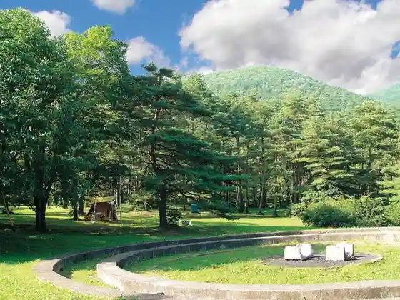
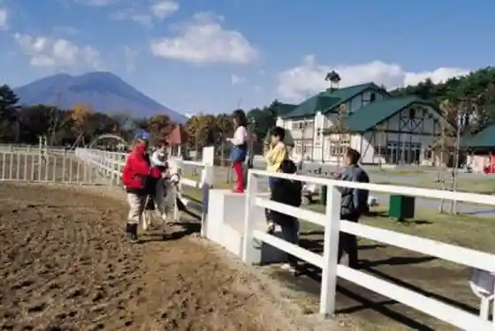
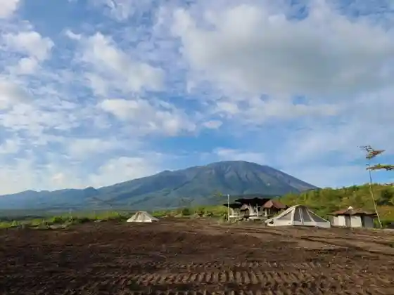
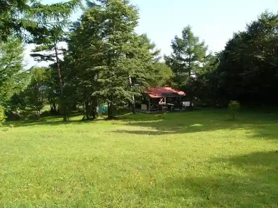

So no Sawa Campground
Takizawa, Iwate · 019-684-2111 · Official / source link

Uma Kko Park Iwate
Takizawa, Iwate · 019-688-5290 · Official / source link

Petto no Sato Campground
Takizawa, Iwate · 019-601-7775 · Official / source link

Uma Kaeshi Campground
Takizawa, Iwate · 019-656-6534 · Official / source link

Iwate Ringyo Buruberii Sono
Takizawa, Iwate · 019-688-4856 · Official / source link
Kyo Shokudo
Takizawa, Iwate · 019-686-2196 · Official / source link
Kibo Suikei Iwana Kan
Takizawa, Iwate · 019-688-8161 · Official / source link
Hatsu Koma Morioka Inta Mise
Takizawa, Iwate · 019-687-5001 · Official / source link
Nosambutsu Kyodo Chokubai Tokoro Fureai
Takizawa, Iwate · 019-688-4588 · Official / source link
Morioka Torakkusuteshon
Takizawa, Iwate · 019-688-1514 · Official / source link
Biggurufu Takizawa
Takizawa, Iwate · 019-656-7811 · Official / source link
Tsuchi Nichi Jambo City
Takizawa, Iwate · 019-684-3166 · Official / source link
Sanchoku Chaguchagu
Takizawa, Iwate · 019-699-3910 · Official / source link
Goryu no Fuji
Takizawa, Iwate · 019-684-2111 · Official / source link
Takizawa Shizen Joho Center
Takizawa, Iwate · 019-691-6555 · Official / source link
Miyazawakenji no Shihi (Kurakake no Yuki)
Takizawa, Iwate · 019-684-2111 · Official / source link
Onigori Ao Mae Shrine
Takizawa, Iwate · 019-684-2111 · Official / source link
Takizawa Forest Park Neicha Center
Takizawa, Iwate · 019-688-5522 · Official / source link
Takizawa Maizo Bunkazai Center Shiseki Park (Yubunezawa Kanjo Resseki)
Takizawa, Iwate · 019-694-9001 · Official / source link
Kurakage Yama
Takizawa, Iwate · 019-684-2111 · Official / source link
Iwate Yama (Takizawa)
Takizawa, Iwate · 019-656-6534 · Official / source link